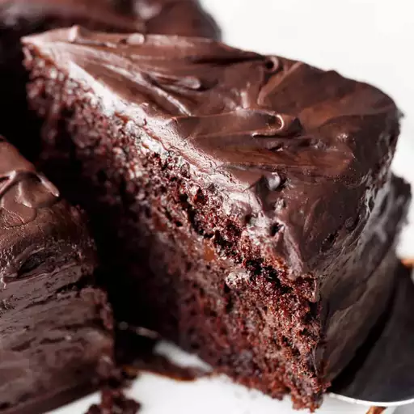

Back to all recipes
Chocolate Cake

Image source is https://www.allrecipes.com/recipe/16779/vegan-chocolate-cake/, Photo by kya hager
Description
This cake is a really simple, yet very tasty cake.
Ingredients:
- 1 1/2 cups all-purpose flour
- 1 cup white sugar
- 1/4 cup cocoa powder
- 1 teaspoon baking soda
- 1/2 teaspoon salt
- 1 cup wate
- 1/3 cup vegetable oil
- 1 teaspoon vanilla extract
- 1 teaspoon distilled white vinegar
Steps:
- Preheat the oven to 350 degrees F (175 degrees C). Lightly grease a 9x5-inch loaf pan.
- Sift flour, sugar, cocoa, baking soda, and salt together in a large bowl. Add water, oil, vanilla, and vinegar; mix together until smooth and pour into the prepared pan.
- Bake in the preheated oven until a toothpick inserted into the center comes out clean, about 45 minutes.